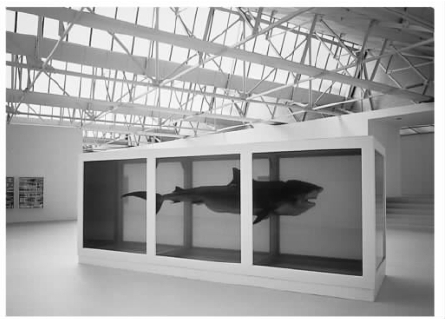
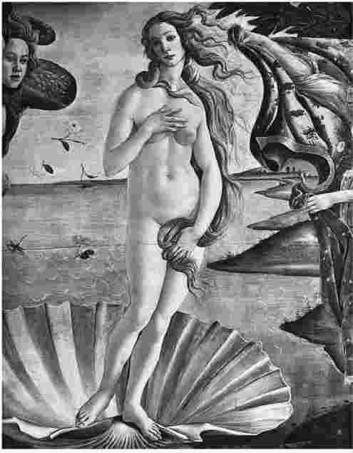
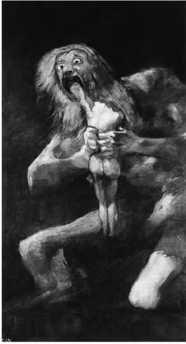

某一天的上午9点，一小伙人陆续走进我们的美国美学协会会议室，在观看题为《当代艺术中的鲜血美学》的幻灯片和影像作品时，我们震惊了。我们看到玛雅国王和成人仪式上的澳大利亚土著青年所流的鲜血；在马里，人们把鲜血泼到雕像上；在婆罗洲，祭祀用的水牛被宰杀时鲜血四溅。今天，一些类似的流血事件在时间和空间上距离我们更近了。一桶又一桶的鲜血浸透了行为艺术家们的身体，奥尔兰 [1] 的嘴角渗出了鲜血，她要通过整形手术重新设计自我，以取得与西方艺术史上的美女相似的长相。其中的某些场面肯定会让在场的绝大部分人感到恶心。
为何如此多的艺术中运用鲜血作为表现手段？其中的一个原因是它和绘画之间具有某种有趣的相似之处。鲜血的色彩夺目，光泽诱人，能附着在物体表面，可用来涂画或者进行图案设计（在土著青年的皮肤上，用鲜血画出的闪光的十字交叉图案使人想到“梦幻时代”的原型期）。鲜血是人类不可或缺的组成部分，如吸血鬼德拉库拉在吸干人的鲜血后将其变成僵尸。鲜血象征着圣洁或高贵，如殉教者或者战士的鲜血。而被单上沾染的点点血迹，一方面暗示着失贞，另一方面预示着成熟。鲜血也可以表示污染和“危险”，如梅毒或艾滋病患者的血液。显然，鲜血在象征和表达方面有着丰富的指涉。
但是，鲜血在怪诞的现代（城市的、工业的、第一世界的）艺术中真的有其在“原始”的宗教仪式中所具有的那种意义吗？一些人鼓吹一种艺术即仪式的理论，在这种理论中，一些普通的物品或者行为通过融入到一种共享的信仰体系当中而获得了象征意义。玛雅国王在帕伦克当众刺穿他的阴茎并用一根芦苇三次穿过它而鲜血直流的时候，显示出了他连通亡灵世界的原始能力。一些艺术家想重新创造出一种与仪式类似的艺术感觉。迪亚曼达·加拉在他的《大灾难》中将歌剧式的巫术、灯光效果和闪光的鲜血相结合，想象性地驱除艾滋病时代的痛苦。赫尔曼·尼奇是维也纳神秘狂欢剧院的创始人，他声称可以通过音乐、绘画、榨酒和仪式性地泼洒动物鲜血和动物内脏使人压抑的精神得到宣泄。你可以通过他的网站www.nitsch.org来浏览详情。
诸如此类的仪式与欧洲传统有着某种联系，在欧洲的两大文化系统（犹太教——基督教系统和希腊——罗马系统）中都有大量与鲜血有关的例子。耶和华要求把动物祭品当作其与希伯来人结盟的一部分。阿伽门农 [2] 和亚伯拉罕 [3] 一样面临一项神圣使命——割破自己孩子的喉咙。耶稣的鲜血是如此神圣，以至于直至今天虔诚的基督徒都会象征性地将其喝下去，以期获得救赎和永生。西方艺术一直热衷于反映这些神话和宗教故事：荷马时代的英雄通过献祭动物而获得神的恩宠，卢坎和塞内加的罗马悲剧中比影片《艾尔姆大街的噩梦》 [4] 里的弗雷迪·克鲁格堆起了更多的残肢。文艺复兴的绘画中也有表现鲜血或者殉教者被砍头的场景，莎士比亚的悲剧常以击剑决斗和有人被刺伤作为结局。
艺术即仪式的理论看起来似乎合乎情理，因为艺术会涉及由某些目的所形成的多种因素的综合，通过典礼、姿势、人工制品的运用而产生象征性价值。许多世界性的宗教仪式都包括丰富的色彩、精心的设计和壮观的场景等因素。但是当一位行为艺术家在使用鲜血的时候，仪式理论并不能解释那些现代艺术家有时采取的怪异、激烈的行为。对于仪式的参与者来说，清楚地了解并接受仪式的目的是最主要的。仪式会通过大家都知道、都能理解的动作来加强参与者与神灵或自然之间的恰当关系。但是观看现代艺术家的作品并做出反应的观众并不能带着共同的信仰和价值观或者对于作品将要传达的东西的先在认知进入其中。大部分现代艺术在剧院、画廊或音乐厅的环境中缺乏深入的团体信仰以进行背景性的强化，那种团体信仰会给精神净化、献祭或者入会仪式提供意义。观众不会感到自己是某一团体中的一分子，他们经常被震惊并远离这一团体。这种事情在明尼阿波利斯市就发生过，当时艾滋病病毒检测呈阳性的行为艺术家罗恩·阿西在台上割下同台表演者的肉，并将浸透鲜血的纸巾悬挂在观众上方，此举引起了观众的恐慌。如果艺术家只是想吓唬中产阶级，就很难将最近被《艺术论坛》杂志高度赞扬的艺术作品和玛丽莲·曼森在舞台上所做的邪恶仪式表演（使用动物祭品）区别开来。
有些人对于当代艺术中使用鲜血做出了嘲讽式的评价，他们认为那样并不能建立有意义的关联，反而扩大了艺术作品的娱乐性和赢利性。艺术世界是一个充满竞争的地方，艺术家需要获得他们能得到的任何优势，其中就包括了制造感官冲击。约翰·杜威1934年在《艺术即经验》中曾经指出艺术家为了适应市场必须为作品的新奇性而努力：
达明·赫斯特是“英国帮”里的一员，这位艺术家在20世纪90年代曾引起争议，当时他用浸泡在装满甲醛的玻璃箱中的死鲨鱼、切成片的牛和羊来进行他恐怖的高科技展示，这使他声名大噪，以至于他在伦敦开的药房餐厅大受欢迎。很难想象赫斯特展示腐肉（由蛆造成的）的场面提升了他在餐饮业的形象，这只不过是用一种神秘的方式来使作品出名。

图1 “年轻的英国艺术家”达明·赫斯特靠他泡在玻璃橱窗中的动物赢得了名声，就比如这条在《活着的意识中肉体死亡的不可能性》（1991）里所展示的巨大鲨鱼。
最近几十年，一些最有名的艺术家由于展示令人吃惊的人体和体液而引起争议。1999年在纽约布鲁克林艺术博物馆举办的“感觉”展览上，艺术家克里斯·奥菲力最具争议的作品《圣母马利亚》甚至运用了大象的粪便。在尝试了身体被刺穿和展示后，在作品中使用鲜血、尿液和精液成为了艺术创作的最新潮流，20世纪80年代后期，人们就美国国家艺术基金会对当代艺术的资助展开了争议。像安德烈斯·塞拉诺的《尿浸基督》（1987）、罗伯特·马普利索普 [5] 的《索萨利托的吉姆和汤姆》（1977）（作品展现一个男子向另外一个男子口中撒尿的情形）中的形象成为当代艺术批评的主要目标。
这些充满争议的作品是关于宗教和体液的，这并非偶然。痛苦和受难的符号是许多宗教的核心，当它们脱离宗教团体的时候往往能给人带来震惊。如果它们与更多的世俗符号相混合，它们自身的含义会受到威胁。在既没有容易理解的仪式含义，也没有通过美获得艺术补偿的情况下，用鲜血和尿液制作的艺术作品就进入了公共领域。也许现代艺术批评家还在怀念像西斯廷教堂绘画那样充满美感和提升精神力量的艺术作品。在那里，至少最后的审判中圣徒殉难或罪人被折磨的血腥场面被描绘得无比传神，作品具有清晰的道德目标（就像古代悲剧中的恐怖是通过令人鼓舞的诗歌来描绘的一样）。同样一些当代艺术批评家认为身体如果要被裸露地展示，就应该被创作成波提切利的《维纳斯的诞生》或米开朗琪罗的《大卫》那样。这些批评家似乎不能从安德烈斯·塞拉诺臭名昭著的摄影作品《尿浸基督》中发现美和道德。参议员杰西·赫尔姆斯对此做出了总结：“我不认识安德烈斯·塞拉诺先生，我希望我从来不会遇见他，因为他不是一位艺术家，他是一个怪物。”
当然，关于艺术和道德的争论并不新鲜。18世纪的哲学家大卫·休谟（1711—1776）也曾经处理过在他那个时代被广泛关注的关于道德、艺术和品位的难题。休谟应该不可能承认艺术中的亵渎、不道德、性、使用体液是合适的。他认为艺术家应该支持进步的启蒙价值观和道德改善。休谟和他的继承者伊曼努尔·康德（1724—1804）的作品创立了现代美学理论的基础，所以我在下面要转而谈论它们。
“美学”（aesthetics）这一术语来自希腊语中表示感觉、感知的词aisthesis。它后来随着亚历山大·鲍姆加通 [6] （1714—1762）将其作为艺术体验（或感性）研究的标志而突显。苏格兰哲学家大卫·休谟没有使用这一术语而说到了“品位”，这是一种微妙的感知艺术作品品质的能力。“品位”看起来也许全然主观，我们都知道那句格言：“品位说不清。”一些人有自己喜欢的颜色和食品，就像他们喜欢某种汽车或家具一样。难道艺术不正是这样吗？也许你喜欢狄更斯和法斯宾德，我却喜欢斯蒂芬·金和《奥斯汀·鲍尔斯》。你怎么能证明你的品位好于我的品位？休谟和康德都挑战了这一问题，他们两人都认为一些艺术作品真的好于另外一些，一些人具有比其他人更好的品位。然而，他们怎样能将这些解释清楚呢？
这两位哲学家采取了不同的解决方式。休谟强调教育和体验，有品位的人从这一过程中获得某种能力，这种能力致使他们认同某些作者和作品是最好的。他觉得这些人最后会形成共识，他们在这样做的时候同时也建立了一种“品位的标准”，这种标准是具普遍意义的。这些专家能将次等级的作品与高品质的作品区分开来。休谟说有品位的人必须“保持自己的意识不受成见束缚”，但是他认为任何人都不应当喜欢艺术中的不道德态度或“邪恶方式”（他列举的例子包括被过分狂热所损害的穆斯林和罗马天主教艺术）。今天的怀疑主义者批评这种观点的狭隘性，他们认为休谟笔下的品位评判者只有通过文化教化才能获得其自身的价值。
康德也曾经谈到过品位 的判断，但是他更关注对审美判断进行解释。他想展示在美学中人们做出的各种好的判断根源于艺术作品本身的特质，而不是来自我们自身和我们的个人偏好。康德试图描绘我们人类对于周围世界的感知和分类能力。在我们的各种心理机能之间有一种复杂的相互作用，这些心理机能包括感知、想象、思维或判断。康德坚持认为：为了在这个世界发挥作用以达到我们的个人目的，我们常常用相当不易察觉的方式来标示我们感觉到的东西。例如，我们这些现代的西方人把世界上又圆又平的东西辨识出来，将这些物品中的一些归类为餐盘，这样我们就用它们来吃饭。同样地，我们也将一些事物认作食物，把其他的认作潜在威胁或者婚姻伴侣。
我们并不容易说清楚我们是怎样将红玫瑰这类东西归于美的事物之列的。玫瑰的美不是像盘子的圆和平那样独立存在于世界上的。如果这种美是独立存在的，那么我们就不会在品位方面产生如此多的不一致。但是还是有某种 共同基础说明了玫瑰是美的。毕竟有许多人同意玫瑰是美的，蟑螂是丑的。休谟企图通过说品位判断是“主体间性”来解决这一问题，他认为有品位的人往往会认同彼此的观点。康德认为美的判断是普遍存在并根源于现实世界的，尽管它们并不是真正“客观的”，这怎么可能呢？
康德几乎称得上是现代科学心理学家的先祖，这些心理学家通过观察婴儿对于面孔的偏爱、追踪观看者的眼球运动或者怂恿艺术家去做磁共振成像来研究审美判断。这一点在后面的第六章也可以看到。康德指出我们通常运用标签或者对这个世界的概念来将适合某种目的感觉刺激分类。例如，当我在洗碗机中发现了一个又圆又平的东西，将它看作一个餐盘的时候，我将它和其他餐盘一起放到碗柜中去，而不是将它放到放餐勺的抽屉中去。美的东西不是为了满足一般的人类目的，与餐盘和餐勺不同。一朵漂亮的玫瑰使我们感到愉悦，并不因为我们要吃它或者必须拿它来做插花。康德肯定这一点的方式说明：一些美的东西具有“无目的的合目的性”。这一新奇的短语需要做出更进一步的解释。
当我将红玫瑰感知为美的时候，这并不像将其放置到我的“意识橱柜”中标明着“美”的条目里，也不像把令人恶心的蟑螂扔到意识中存放“丑恶”条目的垃圾桶中。但是物体的特征几乎是在迫使我（“诱使我”）像这样将其贴上标签。玫瑰也许有其自身的目的（繁殖新的玫瑰），但是这并不是其之所以美的原因。玫瑰的色彩和质地搭配中的某些东西促使我的意识机能感觉到对象是“适当的”，这种适当性就是康德所说的美的物体是有目的的。我们之所以给一个对象贴上美的标签，是因为它促进了我们的一种内在和谐或者说心理机能的“自由游戏”。当对象导致了这种愉悦的时候我们称某些东西是“美的”。当你称一件东西美的时候，你由此而断定每一个人都应当会同意你的观点。尽管这种贴标签的行为是由一种主观的认识或者愉悦的情感所引起，但是它应该对这个世界具有客观的用途。
康德警告说美的享受不同于其他类型的愉悦。如果我花园中的一颗成熟的草莓具有红宝石般的颜色，质地、香味也是那么令人愉悦，我把它扔到嘴里，那么这种审美的判断就被损害了。康德认为要欣赏这颗草莓的美，我们的反应应该是非功利性的，要独立于对象的目的以及对象所引发的愉悦感之外。如果一位观众把波提切利画的维纳斯当作了墙上的画片美女，对她产生了情欲反应，那么他就没有真正地因为她的美而欣赏她。同样，如果有人因为喜欢看高更描绘塔希提岛的绘画而幻想着去那里度假，那么他们和作品的美之间就不再有一种审美关系。

图2 许多人认为艺术应该是美的，裸体应该表现希腊的神，就像桑德罗·波提切利的《维纳斯的诞生》中的维纳斯那样。
康德是一位虔诚的基督徒，但他并不认为上帝在艺术和审美理论方面扮演着解释者的角色。创造美的艺术需要人的天 才 ——一种操控物质材料的特殊能力，由此这些材料创造出机能的和谐，并由此使观众产生一种有距离的享受。（我们将在下一章以勒诺特为凡尔赛宫设计的花园为例进行更进一步的考察。）概而言之，对于康德来说，当具有美感的对象刺激我们的感情、意识和想象的时候，审美体验就产生了。这些机能是以“自由游戏”的方式而不是以任何更加集中和谨慎的方式被激活的。美丽的对象吸引着我们的感官，但却是以一种冷然而超脱的方式。对象优美的形式 和各部分间的关系是产生至关重要的“无目的的合目的性”特征的关键。即使我们没有考虑对象的目的，我们对对象各部分间关系的适当性做出的反应也满足了我们的想象和智力。
康德提出了一种关于美以及我们对于美的反应的解释。这不是他的艺术理论的全部，他也并非坚持所有艺术都必须是美的。但是他对于美的解释成为后来那些强调审美反应理念的理论的核心。许多思想家坚持认为艺术应当激起一种特殊的和非功利性的距离感和中立性的反应。20世纪的批评家通过促使观众欣赏新的具有挑战性的艺术家（如塞尚、毕加索和波洛克 [7] ）来强调审美。至此，康德的美学观点才为人们广泛接受。艺术理论家克莱夫·贝尔（1881—1964）、爱德华·布洛赫（1880—1934）和克莱门特·格林伯格 [8] （1909—1994）采用了各种观点并为不同的读者写作，但是他们都接受了康德的美学态度。例如：贝尔1914年写的文章强调艺术中“有意味的形式”而非作品的内容。“有意味的形式”是一条联系线条和色彩的特殊纽带，它激起了我们的审美情感。一位批评家能帮助其他人看到艺术中的形式，感觉到由这种形式触发的情感。这些情感是特殊和崇高的：贝尔认为艺术是在“寒冷雪白的山峰”上与形式的一次高贵邂逅，他坚持认为艺术应当与生活和政治无关。
布洛赫是剑桥大学的一名文学教授，他于1912年写了一篇很有名的文章，这篇文章将“心理距离”描述为体验艺术的一种先在要求。这在某些方面是康德“想象力的自由游戏”这一审美理论的新解释，布洛赫争辩说艺术作品中与性或政治相关的主题容易阻碍审美意识的产生：
显然，马普利索普和塞拉诺的作品最不可能成为布洛赫头脑中可以标示为“艺术”的候选项。
格林伯格是波洛克的主要支持者，他将形式上升为作品的品质。通过形式，一幅画或者一件雕塑才与其自身的媒材以及作品本身的创作环境相联系。考察作品中有什么或者一件作品“说”什么并不重要，聪明的观众（有“品位”的）想要看作品的真正的平面性或者画面之所以成为画面的方式。
也有一些重要的观点挑战艺术即有意味的形式的说法，我将在本书的后面部分考察其中的一些观点。但是在今天讨论艺术作品的品质、道德、审美、形式等问题的时候，像康德和休谟这样的启蒙思想家的观点依旧还能激起反响。艺术方面的专家对展出马普利索普作品的辛辛那提画廊进行了审查，看其中是否有淫秽内容，结果马普利索普的摄影作品被认为是艺术品，因为这些作品具有精致的形式属性，如考究的光线、古典的构图、优雅的雕塑式外形。换句话说，马普利索普的作品满足了对于真正艺术品的审美期待，甚至作品中那些有巨大阴茎的裸体也应被当作和米开朗琪罗的《大卫》相似的形象冷静地观看。
但是，塞拉诺的支持者又怎样为他的《尿浸基督》辩护呢？这件摄影作品对许多人来说是一种强烈的冒犯。塞拉诺还创作了其他令人难以接受的摄影作品：他的《太平间》系列，这些作品直接以令人恐惧的死尸为表现对象。他另外一个让人生厌的形象是在《天堂和地狱》中展示的一个像教堂红衣主教一样穿着红色衣服的得意洋洋的男人（他实际上是艺术家利昂·戈卢布），他站在一具裸露的、被吊起来的、血淋淋的女性躯干旁边。他的另一作品《牛头》以特写的方式展示了一个被砍下的牛头，它目光呆滞又似乎在偷看观众。批评家卢西·利帕德接受挑战来解释这样的作品，她在1990年4月的《美国艺术》上写了一篇关于塞拉诺的文章。我们能够从她的回顾中来考察艺术理论家是怎样来叙说难以解说的当代艺术的。因为她强调艺术的内容以及对塞拉诺作品情感和政治方面的解释，所以利帕德代表了不同于康德20世纪审美形式主义继承人的另一种传统。
为给塞拉诺辩护，利帕德从三个方面进行了分析，她考察了：（1）他的作品的形式 和物质材料 属性，（2）作品的内容（ 其表达的思想和意义），（3）作品的背景 或者说作品在西方艺术传统中的位置。这其中的每一步都很重要，那么让我们对其进行一番更详细的回顾。
首先，利帕德描绘了像《尿浸基督》这样的作品看起来是怎样的，又是怎样制作的。许多人都对这一标题作呕，以至于看到这件作品就受不了。其他人只看到了小幅的黑白复制品。我的学生认为作品中展示的形象是洗手间或尿罐子里十字架上的耶稣像，可这两种说法都不对，真正的摄影作品和印在杂志或书上的小图像看起来完全不同，就像影像爱好者会认为安塞尔·亚当斯的原作具有复制品所不能传达的成像素质一样。《尿浸基督》的尺寸对于摄影作品来说是巨大的：60英寸×40英寸（差不多为5英尺×3英尺），这是一张彩色反转直放作品，作品表面有光泽，色彩丰富。这种作品的制作媒介很难操作，因为印像的玻璃似的表面很容易被指尖接触或最轻微的尘斑所毁坏。
尽管这幅摄影作品是用（艺术家自己的）尿液所制作的，在标题上也有“尿”字，但是尿液并不是这么理解的。作品中十字架上的耶稣像看起来巨大而神秘，泡在金色的尿液中。利帕德这样写道：
塞拉诺的标题（毫无疑问是故意取的）很刺眼，看起来我们既要受到作品形象的冲击，又要对其进行沉思，我们夹在中间，不知如何是好，给我们带来冲击和沉思的是一个神秘甚至也许是可敬的形象。
至于这件艺术作品的“物质材料”属性，利帕德解释说塞拉诺没有认为体液是令人羞耻的东西，而是一种自然的东西。也许他的这种态度来自他的文化背景：塞拉诺是美国的少数族裔成员（他有部分洪都拉斯和部分非裔古巴血统）。利帕德指出，在天主教中体液和身体受难在一千多年中一直被描述为宗教权力和力量的源泉。教堂的瓶子中装入纺织品、小血块、骨头甚至骷髅以纪念圣徒和圣迹故事，这些遗物获得了敬拜而不被认为是让人恐慌或者害怕的东西。也许是因为塞拉诺在成长的过程中以肉体形式和神灵相遇，他不断回顾这种相遇，它在某些方面比他从周围的文化中所看到的东西更重要。这位艺术家想声讨那种在宗教面前说一套做一套，但又不真正认同其价值的文化行为方式。
在对艺术作品的形式和材料进行讨论的时候，很难不说到作品的内容。通过考察艺术家想要表达的意义 ，我们已经开始进入利帕德文章中的第二个方面。塞拉诺将他对宗教的关注告诉了利帕德：
塞拉诺声称他的作品不是为了抨击宗教而作，而是为了宗教的组织体制 而作，这样做是为了展示当代文化是如何将基督教和它的偶像变得既商业化又廉价的。利帕德通过指出艺术家在1988年制作了大量相似作品（《尿中的神》）的事实来支持这一观点，当时的作品中出现了其他漂浮在尿中的著名西方文化偶像，包括从教皇到撒旦的许多形象。要分析塞拉诺其他令人困扰的作品的内容和意义（如《天堂和地狱》），就需要更进一步讨论他的创作背景 。
利帕德为塞拉诺所做辩护的第三个方面超越了对于其作品的形式属性或主题的讨论而转向对于艺术家的灵感及其艺术前辈的表述。塞拉诺说到过他“和西班牙艺术传统联系紧密，这种传统既是暴力的又是优美的”，他还特别提到画家弗朗西斯科·戈雅和电影制作者路易斯·布努埃尔。这一段艺术史的背景有趣、重要，却又复杂。我将集中关注这两位中的第一位，更加仔细地考察戈雅的作品，以此来考察利帕德将塞拉诺充满争议的当代作品和西班牙备受尊敬的杰出先驱相提并论的时候是否运用了合理的策略。
弗朗西斯科·戈雅·伊·罗西恩特斯（1746—1828）与康德和休谟是同时代的人，他是现代民主价值的支持者。他的一生跨越了美国和法国革命，同时也经历了法国和西班牙之间的半岛战争的恐怖岁月。他作为天才在西方经典艺术史上的地位是稳固的。1799年戈雅被任命为西班牙国王的宫廷画家，他以绘制穿着金色缨穗制服的贵族和穿着闪光缎子和丝绸衣服的女士的形象而著名。他绘制了诸如斗牛这样的自己所熟悉的西班牙式场景，但是他的艺术从来不缺乏性和政治的内容。他绘制的充满诱惑且引起争议的《裸体的玛哈》引起了西班牙宗教裁判所的注意。
当拿破仑的军队侵入西班牙的时候，戈雅目睹了很多动乱的政治事件。他绘制了许多表现战争、反抗和暗杀的场景，例如著名的《1808年5月3日的枪决》，画中无辜的市民被一排看不见脸的、残忍的拿破仑军队士兵所枪杀。画面中央站着一个伸开双手的男人，在子弹快要射中他之前，表现出临死的惊恐，另一个已经死去的男人躺在血泊之中，僧侣们面对屠杀害怕地捂住了他们的脸。有人会说这种死亡的场景在西方艺术中很常见，艺术家曾经利用宗教圣徒殉难的形象来描绘新的政治屠杀。
戈雅的艺术使人们直面人性在极度危险时的极端可能性。在《卡普里乔斯》系列作品中，他创造了道德堕落的野蛮人形象，场景被安排在妓院中，用漫画手法展示了长得像小鸡的人以及长得像驴子的医生。画家为他的艺术目标而辩护（以第三者的身份讲述自己）：
有人也许会说戈雅的道德观使他不同于塞拉诺这样的现代艺术家。然而（有人认为）塞拉诺追求作品的轰动效应，或者说他通过《尿浸基督》、《天堂和地狱》这样的作品所传达出的意义过于模棱两可，而戈雅的立场看起来清晰并且具有辩解力。但是他们之间的这种差异并不容易维持下去，因为戈雅支持法国革命，这样他就被想象为启蒙运动的创立者之一并与休谟和康德有着共同的价值观。但是戈雅亲眼目睹了可怕的暴行，法军入侵西班牙期间双方都有暴力和复仇。他在其令人不安的系列作品《战争的恐怖》（1810—1814）中不断描绘这种场面。戈雅在作品中明白地表示出这场战争中没有道德优胜者——一位西班牙农民被吊死的时候，一名法国士兵却在闲荡，但是另外的画面中一位农民正在砍杀一位无助的穿军装的男人。戈雅的速写似乎在否定启蒙所带来的进步和人类改善的希望，在没完没了的斩首、处私刑、刺杀等可怕场景中接近了道德虚无主义。

图3 弗朗西斯科·戈雅的《正在吞吃儿子的撒旦》暗指古希腊的神话故事，画中令人不安的形象让人可以从政治和个人的角度来阐释。
除了这种政治上的绝望以外，一场可怕的疾病后艺术家聋了，他好像陷入了凄冷的无望之中。他画在自家房间墙上的《深色画》是整个艺术史上最令人不安的作品，《正在吞吃儿子的撒旦》描绘了同类相食的杀婴者肢解婴儿的血腥画面。其他画面形象尽管没有这么血腥和暴力，但更令人不安。《巨人》中的巨人体型巨大，像一个庞大的怪物充满威胁地坐在地上。《埋在沙中的狗》表现了一只可怜的动物被残酷的自然外力所吞没，孤独而绝望。戈雅的这些晚期作品是不可能保持审美距离来观看的。它们是生病的头脑、病态的想象、间歇性神智不清的产物吗？仅仅因为这些作品充满痛苦或道德观模糊就认为戈雅不再是一位好艺术家，这样的想法完全是教条主义的。
戈雅的画面形象将美和暴力相结合，塞拉诺声称在这方面戈雅是其前辈，以上那些概要的艺术史回顾能使我们对他的这一观点做出肯定性的结论。记住，这种对比是卢西·利帕德为塞拉诺那些常常令人不安的作品形象辩护的一个部分。当然，一位恶意批评者也许会说戈雅不同于塞拉诺，因为他的艺术能力比塞拉诺要强，他描绘暴力不是为了寻求轰动效应或者使人震惊，而是为了谴责它。每一种观点都有问题，很难拿任何一位20世纪的艺术家和戈雅这样一位过去的“大师”相比较。我们并非站在一个能知道历史最终裁判结果的位置上，不能成为戈雅并不意味着某人完全缺乏艺术能力。利帕德已经为塞拉诺做了合理的辩护，他认为塞拉诺的作品展示了技能、专业训练、思想和精心的准备。
其次，戈雅可能在他所有的作品中都不强调一种提升道德的信息，而仅仅说人性是可怕的。即使在传递破坏我们审美距离的恐怖内容时，悲叹也能成为艺术中的合理信息。也许塞拉诺想羞辱现在的宗教，但是这种行为也能来自一种道德动机。他拍摄尸体也许不是因为他沉迷于腐烂的过程而是为了给无名的死者提供一些充满人类同情的瞬间。这样的一种目的可能证明了他和他杰出的艺术先辈戈雅之间的一种延续。
近年的艺术作品已经结合了许多恐怖因素。摄影家已经展示了尸体或者被砍下的、可怕的动物脑袋，雕塑家已经展示了正在腐烂的长满蛆的肉，行为艺术家已经将一桶桶的鲜血泼洒出来。我本可以提出其他采用了类似题材并取得巨大成功的艺术家：弗兰西斯·培根的绘画中被折磨的身体（我们将在第六章进行讨论），或者安塞姆·基弗巨大的黑色画布上展示的纳粹烤炉。
到目前为止，我已经对两种艺术理论提出了疑问。艺术即公共仪式的理论不能解释许多当代艺术的价值和效果。走入空间巨大、光线充足、有空调的画廊或者现代音乐厅的体验也许有其自身的仪式化的方面，但是这完全不同于那些拥有共同的超验性价值观的冷静参与者所获得的体验，他们的体验来自像我在本章开头提到的那种场景，如一次玛雅人或者澳大利亚土著的聚会。看来我们不像在寻求接触上帝和更高真实或安慰我们祖先亡灵的方式。
但是将近期的艺术放置到一种康德或休谟那样的美学理论之中也不一定恰当，因为那是一种建立在美、高雅品位、有意味的形式、排除审美情感或“无目的的合目的性”之上的美学理论。许多批评家确实赞扬了马普利索普摄影作品的优美构图，也对赫斯特悬挂着动物的发光玻璃橱窗所体现出来的传统的优雅风格表示了赞扬。即使他们发现作品很美，他们也需要仔细考量其中令人吃惊的内容。也许非功利性在分析这些难以理解的作品时会有小小的作用，它会使我们更努力地去观看和理解作品中那些看起来十分令人反感的东西。但是作品的内容也至关重要，就像我认为赫斯特作品的标题所表明的那样，他用粗陋的问题来直接面对观众，如用鲨鱼切片做的作品被命名为《活着的意识中肉体死亡的不可能性》。
通过回顾以往重要的艺术家戈雅的作品，我已经提出：像塞拉诺的作品那样的丑陋或骇人听闻的当代艺术有其在西欧经典艺术史上明确的先例。艺术不仅包括被那些具有“品位”的人所享受的具有形式美的作品，或者具有美感和道德提升意义的作品，还包括那些丑陋的、令人不安的、具有负面道德颠覆内容的作品。怎样阐释那些内容，这需要在下面进行更多的讨论。